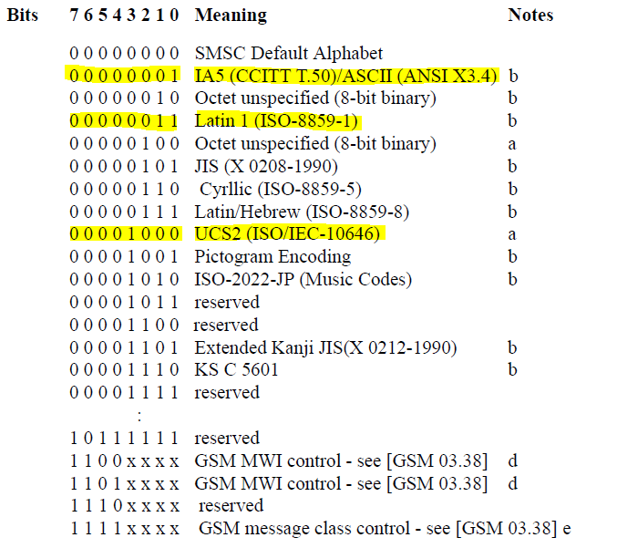

前言
- 國內與SMPP相關的文章整理分享很少，硬嗑文獻又很痛苦。雖然網路上找的到翻譯過的文獻，但其實閱讀門檻依舊很高，所以自己邊研讀邊整理。目前尚未有實作的整理筆記，未來會一一納入。
- 研讀的版本為《Short Message Peer to Peer Protocol Specification v3.4》。
- SMPPv5.0主要是增加對CBS(Cell Broadcast Centres)的interface，以及增加一些TLV的實作，可以參考這篇文章。
- SMSC會進行ss7信號網路交換，因此許多SMPP的操作背景知識也與ss7相關。可以去參考SMPPv3.4中的1.4Reference：GSM 03.40 v5.7.1、GSM 03.38 v5.5.1、GSM MAP 09.02 v5.11.0。
- 研讀中，尚未有機會實際碰觸了解，僅是紀錄了一些目前覺得相對重要的東西（偏實作技術面）。
SMPP Session Description
SMSC與ESME之間的Session皆是由ESME發起，SMPP定義了以下幾種五種形式：
- OPEN：ESME已與SMSC建立連接，但尚未有任何request
- BOUND-TX：定義連接SMSC之ESME為
發送端（bind_transmitter PDU） - BOUND-RX：定義連接SMSC之ESME為
接收端（bind_receiver PDU），通常是用來接收SMSC回送的delivery receipt。 - BOUND-TRX：定義連接SMSC之ESME為
接發端（bind_transceiver PDU），即TX+RX。 - CLOSE：斷開鎖練。
Outbind
outbind是比較特殊的動作。他是由SMSC主動向ESME發起的，ESME再接收到outbind PDU時，會發送 bind_receiver 給SMSC讓自己成為
接收端。通常會這樣做是因為SMSC在發送訊息給ESME時發生異常，由SMSC在主動發起請求ESME再重新建立一次橋梁。

ESME-TX-SMSC
| sent to SMSC | response from SMSC |
|---|---|
| submit_sm | submit_sm_resp |
| data_sm | data_sm_resp |
| query_sm | query_sm_resp |
| cancel_sm | cancel_sm_resp |
| replace_sm | replace_sm_resp |
ESME-RX-SMSC
| sent to SMSC | response from SMSC |
|---|---|
| deliver_sm | deliver_sm_resp |
| data_sm | data_sm_resp |
ESME-TRX-SMSC
| sent to SMSC | response from SMSC |
|---|---|
| submit_sm | submit_sm_resp |
| data_sm | data_sm_resp |
| deliver_sm | deliver_sm_resp |
| query_sm | query_sm_resp |
| cancel_sm | cancel_sm_resp |
| replace_sm | replace_sm_resp |
SMPP Message Mode
SMPP Message Mode可分為三類：Store and Forward、Datagram、Transaction mode。
本次研讀實作僅使用到 Store and Forward，以下簡稱SAF。
SAF
SMPP透過 submit_sm 來實作SAF機制，其會使得當ESME向SMSC發送訊息時，SMSC會將訊息保存直至轉發成功或者過了效期。
註記：為了確認SMSC轉發訊息的結果，ESME在 submit_sm 或 data_sm 中，比須要求SMSC回發
SMSC Delivery Receipt。
Datagram
目前沒用到，未來有機會再研究。
Transaction mode
目前沒用到，未來有機會再研究。
SMPP Message Type
除了一般的訊息傳遞以外，ESME也可以透過 submit_sm 、 data_sm 或 deliver_sm 的參數 esm-class 來傳遞一些較為特殊的訊息，這種特殊的訊息在SMPP中可以分為以下五類：
SMSC Delivery Receipt
此為SMSC透過 deliver_sm 發送回EMSE的狀態訊息。其中包含以下欄位：
- source address ( 例如：
source-addr-ton、source-addr-npi、source-add，source address的資訊是透過最原始的短訊息中的destinaion address中取出 ) - destination address ( 例如：
dest-addr-ton、dest-addr-npi、destination-add，destination address的資訊是透過最原始的短訊息中的source address中取出 ) - esm_class
- message_state
- network_error_code
- receipted_message_id
Intermediate Notification
不是很確定，此在本規範的應用範圍之外。
大概是在說在SMSC傳遞訊息給終端手機的過程中，SMSC會透過此訊息類型，回傳一些資訊給ESME。例如：
- 提供
容量爆惹的資訊給Voice Mail System(語音信箱) - 在SAF過程中，SMSC在首次傳送給終端失敗後，再嘗試的狀態回報。
SME Delivery Acknowledgement
不是很確定，此在本規範的應用範圍之外。
當終端手機用戶(SME)讀取了SMS儲存單位(ex:SIM卡)中的SMS訊息，此SME則會發送一筆SME Delivery Acknowledgement回去。
SME Manual/User Acknowledgement
不是很確定，此在本規範的應用範圍之外。
Conversation Abort
不是很確定，此在本規範的應用範圍之外。且只有泡菜在用。
SMPP PDU Type and Format Definitions
Type Definition
SMPP PDU是由以下五種型別參數組合而成：
．Integer：採用MSB first (Big Endian)
．C-Octet String：以NULL結尾的ASCII字元
．C-Octet String（Decimal）：以NULL結尾的ASCII Character
．C-Octet String（Hex）：以NULL結尾的ASCII Decimal
．Octet String：byte array。不需要以NULL結尾。
Notes：
１. 若Octet String段為NULL，表示該字段由一個NULL組成，表0x00。
２. 若Integer段為NULL，表該字段無值。
３. 對C-Octet來說，其總長度都需要包含NULL的一個位元組長度。
Parameter Field Size Natation
PDU Format-Overview
SMPP PDU = PDU header + PDU body
PDU header→Mandatory
PDU body→Optional
PDU Layout
PDU header = command length + command id + command status + sequence number
PDU body = Mandatory Parameters + Optional Parameters
| PDU Field | Size octets(byte) | Type |
|---|---|---|
| Command_length | 4 | Integer |
| Command_id | 4 | Integer |
| Command_status | 4 | Integer |
| Sequence_number | 4 | Integer |
| Mandatory Parameter | var. | mixed |
| Optional Parameter | var. | mixed |
Command_length
整個PDU的長度（包含command_length本身的4個bytes）
Command_id
用來標示此為哪一種PDU(ex: submit_sm? query_sm?)
由ESME發起request給SMSC的值域落在0x00000000~0x000001FF
而ESME收到response自SMSC的值域落在0x80000000~0x800001FF
Note：同一個session的request/response，command_id必須一致。
Command_status
由ESME發起request給SMSC的值必須為NULL
response則參考以下表格
Sequence_number
用來識別request與response為同一session。
此值由ESME決定，值域為0x00000001~0x7FFFFFFF（單調遞增）。
當此值遞增至最大值以後，將從0x00000001開始重新計起。
Mandatory Parameter
system_id
bind時識別ESME與SMSC用。
password
SMSC提供一組密碼以驗證ESME的bind；
ESME提供一組密碼以驗證SMSC的outbind。
system_type
表明ESME的類別，例如為VMS或OTA等等。根據不同的SMSC，某些情況下會允許此參數填寫NULL。
interface_version
表明連線所使用的SMPP版本號：
若版本號為v3.3或更舊則參數值應填0x00~0x33
若版本號為v3.4則參數值填0x34
addr_ton, source_addr_ton, dest_addr_ton, esme_addr_ton
TON：Type of Number，號碼型式。
目前號碼主要分為以下幾類：
addr_npi, source_addr_npi, dest_addr_npi, esme_addr_npi
NPI：Number Plan Indicator，號碼分類計劃。
目前主要分為以下幾類：
address_range
用來給短訊指定SME路由（可多數個），以及將狀態報告回傳給ESME。如不需要可以設置為NULL。
source_addr
主叫位址，如不需要可以設置NULL；SMSC也可以設定default。
destination_addr
被叫位址，如不需要可以設置NULL；即MSISDN。
esme_addr
ESME位址，用以接收Alert_notification。
service_type
好像沒用到？不確定。後補。
esm_class
指定Message Mode、Message Type、GSM Network Specific Feature。
目前只有使用到SAF。
ESME->SMSC esm_class
SMSC->ESME esm_class
protocol_id
應都是設置為GSM。
Note: GSM03.40
priority_flag
priority會根據不同的網路有不同相對應的含意，例如：GSM、ANSI-136、IS-95。
這裡只討論GSM。在GSM裡，若0即代表無優先級；>0則代表具有傳送優先權。
schedule_delivery_time
沒用到，掰掰。
validity_period
即訊息在SMSC的存活時間，超過則丟棄。（目前好像也沒用到，以SMSC default的時間為主）
registered_delivery
用來要求SMSC回傳指定訊息給ESME。目前只使用xxxxxx01。
replace_if_present_flag
沒用到，掰掰。
data_config
目前好像只用到這三個。
Note:
a. 參考GSM03.38
b. 參考GSM03.38

sm_default_msg_id
看不懂。訊息唯一key？
應該是說在SMSC可以先設計好一些短消息，ESME在發訊息的時候可以直接傳遞此參數並帶入相對應於SMSC預設短消息的key，
藉以達到傳送預設內容的功能。
The sm_default_msg_id parameter specifies the SMSC index of a pre-defined(‘canned’) message.
| 值域 | 作用 |
|---|---|
| 0 | reserved |
| 1-254 | Allowed values |
| 255 | reserved |
sm_length
short_message 訊息長度，最大255bytes。
若有需要超過254bytes的長簡訊，則將此參數值設為0且 short_message 不放訊息，而是將訊息放在 message_payload 。
此處的內容編碼格是由 data_config 決定。
short_message
顧名思義，簡訊內容。在 submit_sm、submit_multi、deliver_sm 此三種PDU
中使用。最度上限254bytes。
若有需要超過254bytes的長簡訊，則將此參數值設為0且 short_message 不放訊息，而是將訊息放在 message_payload 。
message_id
由SMSC提供的key。在 submit_sm_resp、submit_multi_resp、deliver_sm_resp 此三種PDU中使用。
ESME可以使用此key去使用 query_sm。
number_of_dests
被叫號個數。ESME可以一次送很多給被叫號給SMSC去轉發，但上限為254。
這個是對應到 destination_addr 的個數。
dest_flag
這個flag用來決定 destnation_addr 是一個SME位址(MSISDN?)還是一個分配表名。
目前猜測若為分配表名，應該是於SMSC中所儲存的Table，而ESME透過提供一個表明讓SMSC可以將訊息發送給對應表格內的所有被叫號。
| 值域 | 作用 |
|---|---|
| 0 | SME Address |
| 1 | Distribution List Name |
no_unsuccess
no不是no，是number…是因為東西方邏輯不同嗎？這個名稱定義的超不直覺。
這個是作用於 submit_multi 發送多筆訊息時，傳送失敗的筆數。
dl_name
這大概就是剛剛上面 dest_flag 裡提到的分配表：Distribution List。
文件上表明此表是由ESME與SMSC共同定義，並存在SMSC中。
message_state
訊息的狀態。在request我猜應該都是NULL，文件並沒有特別說明。
我想應該是被使用在由SMSC->ESME的 query_sm_resp 這個PDU中。
Optional Parameter
Optional Paramter固定放在訊息最尾端，所有的parameter都會有一個16bit的Tag Identifier。
目前可以使用的如下：
| 值域 | 作用 |
|---|---|
| 0x0000 | Reserved |
| 0x0001 - 0x00FF | SMPP defined optional parameters |
| 0x0100 - 0x01FF | Reserved |
| 0x0200 - 0x05FF | SMPP defined optional parameters |
| 0x0600 - 0x10FF | Reserved for SMPP Protocol Extension |
| 0x1100 - 0x11FF | Reserved |
| 0x1200 - 0x13FF | SMPP defined optional parameters |
| 0x1400 - 0x3FFF | Reserved for SMSC Vendor specific optional parameters |
| 0x4000 - 0xFFFF | Reserved |
繁族不及備載…直接上圖，有用到再去查。
| Tag | Value | Wireless Network Technology |
|---|---|---|
| dest_addr_subunit | 0x0005 | GSM |
| dest_network_type | 0x0006 | Generic |
| dest_bearer_type | 0x0007 | Generic |
| dest_telematics_id | 0x0008 | GSM |
| source_addr_subunit | 0x000D | GSM |
| source_network_type | 0x000E | Generic |
| source_bearer_type | 0x000F | Generic |
| source_telematics_id | 0x0010 | GSM |
| qos_time_to_live | 0x0017 | Generic |
| payload_type | 0x0019 | Generic |
| additional_status_info_text | 0x001D | Generic |
| receipted_message_id | 0x001E | Generic |
| ms_msg_wait_facilities | 0x0030 | GSM |
| privacy_indicator | 0x0201 | CDMA, TDMA |
| source_subaddress | 0x0202 | CDMA, TDMA |
| dest_subaddress | 0x0203 | CDMA, TDMA |
| user_message_reference | 0x0204 | Generic |
| user_response_code | 0x0205 | CDMA, TDMA |
| source_port | 0x020A | Generic |
| destination_port | 0x020B | Generic |
| sar_msg_ref_num | 0x020C | Generic |
| language_indicator | 0x020D | CDMA, TDMA |
| sar_total_segments | 0x020E | Generic |
| sar_segment_seqnum | 0x020F | Generic |
| SC_interface_version | 0x0210 | Generic |
| callback_num_pres_ind | 0x0302 | TDMA |
| callback_num_atag | 0x0303 | TDMA |
| number_of_messages | 0x0304 | CDMA |
| callback_num | 0x0381 | CDMA, TDMA, GSM, iDEN |
| dpf_result | 0x0420 | Generic |
| set_dpf | 0x0421 | Generic |
| ms_availability_status | 0x0422 | Generic |
| network_error_code | 0x0423 | Generic |
| message_payload | 0x0424 | Generic |
| delivery_failure_reason | 0x0425 | Generic |
| more_messages_to_send | 0x0426 | GSM |
| message_state | 0x0427 | Generic |
| ussd_service_op | 0x0501 | GSM (USSD) |
| display_time | 0x1201 | CDMA, TDMA |
| sms_signal | 0x1203 | TDMA |
| ms_validity | 0x1204 | CDMA, TDMA |
| alert_on_message_delivery | 0x130C | CDMA |
| its_reply_type | 0x1380 | CDMA |
| its_session_info | 0x1383 | CDMA |
PDU Length
在Decode PDU封包的時候，首先去讀首4 bytes的 command_length ，即得剩餘的長度。
舉個例子來說：
00 00 00 2F 00 00 00 02 00 00 00 00 00 00 00 01 53 4D 50 50 33 54 45 53 54 00 73 65 63 72 65 74 30 38 00 53 55 42 4D 49 54 31 00 00 01 01 00
Note: Values are shown in Hex format.
00 00 00 2F ：0x0000002F Command Lenfth
00 00 00 02 ：0x00000002 Command ID (bind_transmitter)
00 00 00 00 ：0x00000000 Command Status
00 00 00 01 ：0x00000001 Sequence Number
SMPP PDU Definition
BIND
BIND_TRANSMITTER
| Field Name | Size octets | Type | Note |
|---|---|---|---|
| command_length | 4 | Integer | |
| command_id | 4 | Integer | 0x00000002 |
| command_status | 4 | Integer | NULL |
| sequence_number | 4 | Integer | |
| system_id | Var.max-16 | C-Octet-String | |
| password | Var.max-9 | C-Octet-String | |
| system_type | Var.13 | C-Octet-String | |
| interface_version | 1 | Integer | |
| addr_ton | 1 | Integer | 此為ESME的addr |
| addr_npi | 1 | Integer | 此為ESME的addr |
| address_range | Var.max-41 | C-Octet-String |
BIND_TRANSMITTER_RESP
| Field Name | Size octets | Type | Note |
|---|---|---|---|
| command_length | 4 | Integer | |
| command_id | 4 | Integer | 0x80000002 |
| command_status | 4 | Integer | |
| sequence_number | 4 | Integer | |
| system_id | Var.max-16 | C-Octet-String | 若command_status != 0x00000000，則不會回傳Body。 |
BIND_RECEIVER
| Field Name | Size octets | Type | Note |
|---|---|---|---|
| command_length | 4 | Integer | |
| command_id | 4 | Integer | 0x00000001 |
| command_status | 4 | Integer | NULL |
| sequence_number | 4 | Integer | |
| system_id | Var.max-16 | C-Octet-String | |
| password | Var.max-9 | C-Octet-String | |
| system_type | Var.13 | C-Octet-String | |
| interface_version | 1 | Integer | |
| addr_ton | 1 | Integer | 此為ESME的addr |
| addr_npi | 1 | Integer | 此為ESME的addr |
| address_range | Var.max-41 | C-Octet-String |
BIND_RECEIVER_RESP
| Field Name | Size octets | Type | Note |
|---|---|---|---|
| command_length | 4 | Integer | |
| command_id | 4 | Integer | 0x80000001 |
| command_status | 4 | Integer | |
| sequence_number | 4 | Integer | |
| system_id | Var.max-16 | C-Octet-String | 若command_status != 0x00000000，則不會回傳Body。 |
BIND_TRANSCEIVER
| Field Name | Size octets | Type | Note |
|---|---|---|---|
| command_length | 4 | Integer | |
| command_id | 4 | Integer | 0x00000009 |
| command_status | 4 | Integer | NULL |
| sequence_number | 4 | Integer | |
| system_id | Var.max-16 | C-Octet-String | |
| password | Var.max-9 | C-Octet-String | |
| system_type | Var.13 | C-Octet-String | |
| interface_version | 1 | Integer | |
| addr_ton | 1 | Integer | 此為ESME的addr |
| addr_npi | 1 | Integer | 此為ESME的addr |
| address_range | Var.max-41 | C-Octet-String |
BIND_TRANSCEIVER_RESP
| Field Name | Size octets | Type | Note |
|---|---|---|---|
| command_length | 4 | Integer | |
| command_id | 4 | Integer | 0x80000009 |
| command_status | 4 | Integer | |
| sequence_number | 4 | Integer | |
| system_id | Var.max-16 | C-Octet-String | 若command_status != 0x00000000，則不會回傳Body。 |
OUTBIND
| Field Name | Size octets | Type | Note |
|---|---|---|---|
| command_length | 4 | Integer | |
| command_id | 4 | Integer | 0x0000000B |
| command_status | 4 | Integer | NULL |
| sequence_number | 4 | Integer | |
| system_id | Var.max-16 | C-Octet-String | |
| password | Var.max-9 | C-Octet-String |
UNBIND
UNBIND
| Field Name | Size octets | Type | Note |
|---|---|---|---|
| command_length | 4 | Integer | |
| command_id | 4 | Integer | 0x00000006 |
| command_status | 4 | Integer | NULL |
| sequence_number | 4 | Integer |
UNBIND_RESP
| Field Name | Size octets | Type | Note |
|---|---|---|---|
| command_length | 4 | Integer | |
| command_id | 4 | Integer | 0x80000006 |
| command_status | 4 | Integer | |
| sequence_number | 4 | Integer |
GENERIC_NACK
當接收端收到無效的PDU Header時，就會回傳一個GENERIC_NACK PDU，無效的PDU Header有以下兩種狀況：
command_length的值與實際長度不合 0x00000002
command_id無法識別 0x00000003
| Field Name | Size octets | Type | Note |
|---|---|---|---|
| command_length | 4 | Integer | |
| command_id | 4 | Integer | 0x80000000 |
| command_status | 4 | Integer | 0x00000002 or 0x00000003 |
| sequence_number | 4 | Integer | 如果request PDU已經無法decode了，則可設為NULL。 |
SUBMIT_SM
Note:
source address(主叫號的位址) = source_addr_ton + source_addr_npi + source_addr
destination address(主叫號的位址) = dest_addr_ton + dest_addr_npi + dest_addr
Note:
SMPP可以透過 replace_sm PDU來進行尚在SMSC為發出的短訊替換內容，
但 submit_sm 也可以透過 parameter : replace_if_present_flag 來替換內容。
replace_if_present_flag 若值為1，則當SMSC發現他存有某則具有相同source address & destination address的短訊，則會將短訊替換為新的。若沒發現有相同的address，則SMSC會將其request當作新的一筆短訊送出。
replace_sm 比較不同的是，若SMSC找不到具有相同address的短訊，則會回傳Error，不相此筆短訊送出。
SUBMIT_SM
| Field Name | Size octets | Type | Note |
|---|---|---|---|
| command_length | 4 | Integer | |
| command_id | 4 | Integer | 0x00000004 |
| command_status | 4 | Integer | NULL |
| sequence_number | 4 | Integer | |
| service_type | Var.max-6 | C-Octet-String | |
| source_addr_ton | 1 | Integer | 主叫號 |
| source_addr_npi | 1 | Integer | 主叫號 |
| source_addr | Var.max-21 | C-Octet-String | 主叫號 |
| dest_addr_ton | 1 | Integer | 被叫號 |
| dest_addr_npi | 1 | Integer | 被叫號 |
| dest_addr | Var.max-21 | C-Octet-String | 被叫號 |
| esm_class | 1 | Integer | 目前SMSC都是只支援SAF，理論這這條應該不需要額外設置，可能設NULL? |
| protocol_id | 1 | Integer | GSM類型。參考GSM03.40的9.2.3.9。 |
| protocol_flag | 1 | Integer | 0 (沒優先權) or 1 (高度優先)。 |
| schedule_delivery_time | 1 or 17 | C-Octet-String | NULL表立即發送。 |
| validity_period | 1 or 17 | C-Octet-String | NULL表以SMSC Default為主。 |
| registered_delivery | 1 | Integer | 0 (不需要SMSC回傳Delivery receipt or ACK) or 1 (須回傳)。 |
| replace_if_present_flag | 1 | Integer | 0 (當有相同主叫號&被叫號，不要替換訊息) or 1 (要替換)。 |
| data_config | 1 | Integer | 00000001：ASCII 00000011：Latin1 (ISO-8859-1) 00001000：USC2 (ISO/IEC-10646) |
| sm_default_msg_id | 1 | Integer | 若沒有要使用SMSC的短消息表，則填NULL。 |
| sm_length | 1 | Integer | short_message 長度。 |
| short_message | Var.0-256 | C-Octet-String | 此處編碼格是由data_config決定。 |
SUBMIT_SM_RESP
| Field Name | Size octets | Type | Note |
|---|---|---|---|
| command_length | 4 | Integer | |
| command_id | 4 | Integer | 0x80000004 |
| command_status | 4 | Integer | |
| sequence_number | 4 | Integer | |
| message_id | Var.max-65 | C-Octet-String | 由SMSC生成，供ESME後續query用的ID。 |
SUBMIT_MULIT
可將短訊傳送給多個被叫號。
SUBMIT_MULIT
| Field Name | Size octets | Type | Note |
|---|---|---|---|
| command_length | 4 | Integer | |
| command_id | 4 | Integer | 0x00000021 |
| command_status | 4 | Integer | NULL |
| sequence_number | 4 | Integer | |
| service_type | Var.max-6 | C-Octet-String | |
| source_addr_ton | 1 | Integer | 主叫號 |
| source_addr_npi | 1 | Integer | 主叫號 |
| source_addr | Var.max-21 | C-Octet-String | 主叫號 |
| number_of_dests | 1 | Integer | 被叫號數量。若被叫號是以Distribution List的形式呈現，則此處也要設為1。 |
| dest_address(es) | Var.n[2-24] | See Ref. | 一個被叫號 or 多個被叫號 or Distribution List name 。 |
| esm_class | 1 | Integer | 目前SMSC都是只支援SAF，理論這這條應該不需要額外設置，可能設NULL? |
| protocol_id | 1 | Integer | GSM類型。參考GSM03.40的9.2.3.9。 |
| protocol_flag | 1 | Integer | 0 (沒優先權) or 1 (高度優先)。 |
| schedule_delivery_time | 1 or 17 | C-Octet-String | NULL表立即發送。 |
| validity_period | 1 or 17 | C-Octet-String | NULL表以SMSC Default為主。 |
| registered_delivery | 1 | Integer | 0 (不需要SMSC回傳Delivery receipt or ACK) or 1 (須回傳)。 |
| replace_if_present_flag | 1 | Integer | 0 (當有相同主叫號&被叫號，不要替換訊息) or 1 (要替換)。 |
| data_config | 1 | Integer | 00000001：ASCII 00000011：Latin1 (ISO-8859-1) 00001000：USC2 (ISO/IEC-10646) |
| sm_default_msg_id | 1 | Integer | 若沒有要使用SMSC的短消息表，則填NULL。 |
| sm_length | 1 | Integer | short_message 長度。 |
| short_message | Var.0-256 | C-Octet-String | 此處編碼格是由data_config決定。 |
Destination Address definition
| Field Name | Size octets | Type | Note |
|---|---|---|---|
| dest_flag | 1 | Integer | 0 (表SME Address) or 1 (表Distribution List) |
| dest_addr_ton | 1 | Integer | (當dest_flag=0使用)被叫號 |
| dest_addr_npi | 1 | Integer | (當dest_flag=0使用)被叫號 |
| dest_addr | Var.max-21 | C-Octet-String | (當dest_flag=0使用)被叫號 |
| dl_name | Var.max-21 | C-Octet-String | (當dest_flag=1使用)SMSC上的分配表名。 |
SUBMIT_MULIT_RESP
| Field Name | Size octets | Type | Note |
|---|---|---|---|
| command_length | 4 | Integer | |
| command_id | 4 | Integer | 0x80000021 |
| command_status | 4 | Integer | |
| sequence_number | 4 | Integer | |
| message_id | Var.max-65 | C-Octet-String | 由SMSC生成，供ESME後續query用的ID。 |
| no_unsuccess | 1 | Integer | |
| unsuccess_sme(s) | Var.n[7-27] | See Ref. | 一個被叫號 or 多個被叫號 or Distribution List name 。 |
Unsuccessful deliveries
| Field Name | Size octets | Type | Note |
|---|---|---|---|
| dest_addr_ton | 1 | Integer | 被叫號 |
| dest_addr_npi | 1 | Integer | 被叫號 |
| dest_addr | Var.max-21 | C-Octet-String | 被叫號 |
| error_status_code | 4 | Integer | submit_multi錯誤的原因 |
DELIVER_SM
請求SMSC回傳訊息給ESME，訊息主要分為以下四種：
- SMSC Delivery
- SME Delibery Acknowledgement
- SME Manual/User Acknowledgement
- Intermediate
透過 esm_class 來決定是要哪一種。
DELIVER_SM
| Field Name | Size octets | Type | Note |
|---|---|---|---|
| command_length | 4 | Integer | |
| command_id | 4 | Integer | 0x00000005 |
| command_status | 4 | Integer | NULL |
| sequence_number | 4 | Integer | |
| service_type | Var.max-6 | C-Octet-String | |
| source_addr_ton | 1 | Integer | 主叫號 |
| source_addr_npi | 1 | Integer | 主叫號 |
| source_addr | Var.max-21 | C-Octet-String | 主叫號 |
| dest_addr_ton | 1 | Integer | 被叫號 |
| dest_addr_npi | 1 | Integer | 被叫號 |
| dest_addr | Var.max-21 | C-Octet-String | 被叫號 |
| esm_class | 1 | Integer | 目前SMSC都是只支援SAF，理論這這條應該不需要額外設置，可能設NULL? |
| protocol_id | 1 | Integer | GSM類型。參考GSM03.40的9.2.3.9。 |
| protocol_flag | 1 | Integer | 0 (沒優先權) or 1 (高度優先)。 |
| schedule_delivery_time | 1 or 17 | C-Octet-String | 用不到，NULL。 |
| validity_period | 1 or 17 | C-Octet-String | 用不到，NULL。 |
| registered_delivery | 1 | Integer | 0 (不需要ESME回傳ACK) or 1 (須回傳)。 |
| replace_if_present_flag | 1 | Integer | 用不到，NULL。 |
| data_config | 1 | Integer | 00000001：ASCII 00000011：Latin1 (ISO-8859-1) 00001000：USC2 (ISO/IEC-10646) |
| sm_default_msg_id | 1 | Integer | 用不到，NULL。 |
| sm_length | 1 | Integer | short_message 長度。 |
| short_message | Var.0-256 | C-Octet-String | 此處編碼格是由data_config決定。 |
DELIVER_SM_RESP
| Field Name | Size octets | Type | Note |
|---|---|---|---|
| command_length | 4 | Integer | |
| command_id | 4 | Integer | 0x80000005 |
| command_status | 4 | Integer | |
| sequence_number | 4 | Integer | |
| message_id | Var.max-65 | C-Octet-String | 用不到，NULL。 |
DATA_SM
好像用不到，有機會再研究。
DATA_SM
好像用不到，有機會再研究。
DATA_SM_RESP
好像用不到，有機會再研究。
QUERY_SM
這個PDU是用來讓ESME向SMSC查詢之前發送過的短訊狀態。
查詢條件是用 source_address 與 message_id 。
如果要查詢的短訊在最一開始 submit_sm 的時候設置 source_address ( source_addr_ton、source_addr_npi、source_addr ) 為NULL，在那查詢的時候也要用NULL來查詢。
QUERY_SM
| Field Name | Size octets | Type | Note |
|---|---|---|---|
| command_length | 4 | Integer | |
| command_id | 4 | Integer | 0x00000003 |
| command_status | 4 | Integer | NULL |
| sequence_number | 4 | Integer | |
| message_id | Var.max-65 | C-Octet-String | 此值須從submit_sm_resp中的message_id查找。 |
| source_addr_ton | 1 | Integer | 主叫號 |
| source_addr_npi | 1 | Integer | 主叫號 |
| source_addr | Var.max-21 | C-Octet-String | 主叫號 |
QUERY_SM_RESP
| Field Name | Size octets | Type | Note |
|---|---|---|---|
| command_length | 4 | Integer | |
| command_id | 4 | Integer | 0x80000003 |
| command_status | 4 | Integer | NULL |
| sequence_number | 4 | Integer | |
| message_id | Var.max-65 | C-Octet-String | 若有查找到才會有值。 |
| final_date | 1 or 17 | C-Octet-String | 短訊狀態為最終狀態才會有值，若查詢時尚未到達最終狀態則為NULL。 |
| message_state | 1 | Integer | |
| error_code | 1 | Integer |
CANCEL_SM
用來刪除尚在SMSC中還未發送出去的訊息。
通常應該都是以 message_id 當做過濾條件一次刪一筆，但文件上有寫也可以用 service_type 當作過濾條件一次刪多筆。
CANCEL_SM
| Field Name | Size octets | Type | Note |
|---|---|---|---|
| command_length | 4 | Integer | |
| command_id | 4 | Integer | 0x00000008 |
| command_status | 4 | Integer | NULL |
| sequence_number | 4 | Integer | |
| service_type | Var.max-6 | C-Octet-String | |
| message_id | Var.max-65 | C-Octet-String | 此值須從submit_sm_resp中的message_id查找。 |
| source_addr_ton | 1 | Integer | 主叫號 |
| source_addr_npi | 1 | Integer | 主叫號 |
| source_addr | Var.max-21 | C-Octet-String | 主叫號 |
| dest_addr_ton | 1 | Integer | 被叫號 |
| dest_addr_npi | 1 | Integer | 被叫號 |
| dest_addr | Var.max-21 | C-Octet-String | 被叫號 |
CANCEL_SM_RESP
| Field Name | Size octets | Type | Note |
|---|---|---|---|
| command_length | 4 | Integer | |
| command_id | 4 | Integer | 0x80000008 |
| command_status | 4 | Integer | |
| sequence_number | 4 | Integer |
REPLACE_SM
好像用不到，有機會再研究。
REPLACE_SM
好像用不到，有機會再研究。
REPLACE_SM_RESP
好像用不到，有機會再研究。
ENQUIRE_LINK
用作ESME與SMSC雙方的連線確認。
ENQUIRE_LINK
| Field Name | Size octets | Type | Note |
|---|---|---|---|
| command_length | 4 | Integer | |
| command_id | 4 | Integer | 0x00000015 |
| command_status | 4 | Integer | NULL |
| sequence_number | 4 | Integer |
ENQUIRE_LINK_RESP
| Field Name | Size octets | Type | Note |
|---|---|---|---|
| command_length | 4 | Integer | |
| command_id | 4 | Integer | 0x80000015 |
| command_status | 4 | Integer | NULL |
| sequence_number | 4 | Integer | 會回傳代表成功：填 ESME_ROK |
ALERT_MOTIFACATION
好像用不到，有機會再研究。